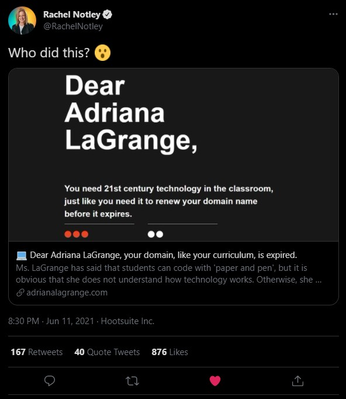

When referring to the use of technology in Alberta's new curriculum Ms. Adriana LaGrange has said that students can code with "paper and pen", but it is obvious that Adriana LaGrange does not understand how technology works. Otherwise, she would not have let her domain name expire. This includes failing to renew the domain during the 41 day grace period.
Alberta Education Minister @AdrianaLaGrange says she doesn't have to invest any money in schools to implement a province-wide coding program... students can simply code with "paper and pen".... this isn't what 21st century learning looks like... #ableg #abed #abpoli #yyc #yeg pic.twitter.com/zX5obftZf6
— Just Another Alberta Teacher (@TeacherAlberta) March 30, 2021
Ms. LaGrange's draft K-6 curriculum is under a lot of public scrutiny for good reasons. One of the main reasons for the public backlash is because this draft curriculum is out of touch with the modern world that Albertans live in today.
Many educational professionals are calling for the curriculum to be thrown out and teachers have voted that they are not confident in Adriana LaGrange as Alberta's Minister of Education.
Alberta's educational curriculum is not a political issue, it's an Albertan issue. Whether or not you support Alberta's United Conservative Party, you should review the draft curriculum at:
https://curriculum.learnalberta.ca/curriculum/en
Submit your feedback on the curriculum at:
https://extranet.gov.ab.ca/opinio6/s?s=public2021EN
Send an email to your MLA letting them know of your feedback on the new curriculum. You can find the MLA in your riding at:
https://www.assembly.ab.ca/members/members-of-the-legislative-assembly
Most importantly: email Alberta's Education Minister and let her know how you feel about the curriculum and maybe let her know that her domain name expired. education.minister@gov.ab.ca
Jun 12, 2021 @ 12:11pm - Much has happened overnight, including the leader of the opposition (Rachel Notley) asking "who did this", and I have an answer. My name is Todd Willsie. I am a Cyber Security consultant, the president of Calgary's Extra Life guild (a group that raises money for Alberta Children's Hospital), and a creative director for Alberta-based creative gaming group (Endless Era Gaming). I am just an Albertan that wants our government to listen to us. I just so happen to also own the domain name adrianalagrange.com.
Jun 11, 2021 @ 3:10pm - Adriana LaGrange's social media profiles have now removed her old domain. While this is expected, I hope she finds it in her heart to donate to charity and get her domain back.
The Edmonton Public School Board has formally asked the Alberta government to stop and rewrite the much-maligned draft K-6 curriculum, saying it isn’t age appropriate and doesn’t reflect the province’s...
An Edmonton woman says the Alberta government is using her grandmother as a token of Black history and wants references to her removed from a draft new elementary school curriculum....
Alberta’s Ministry of Education under the leadership of Jason Kenney’s United Conservative Party recently released a draft of new kindergarten to Grade 6 curriculum it proposes beginning to pilot in...
Some Alberta Indigenous leaders and an elder say the provincial government has used them or misrepresented their positions to gain endorsements for a new elementary school curriculum they do not...
Alberta teachers voted almost unanimously in favour of a non-confidence motion in Education Minister Adriana LaGrange Sunday morning. The motion of non-confidence was passed, with 99 per cent of delegates...
In a virtual school meeting Monday, the Edmonton Catholic School Board decided unanimously to not pilot the Alberta government’s draft kindergarten to Grade 6 curriculum. Board members said they embrace...
LETHBRIDGE – Alberta’s new elementary curriculum may only be a day old, but it’s already coming under fire from some educators and parents. “It’s deeply disappointing,” says David Scott, an...